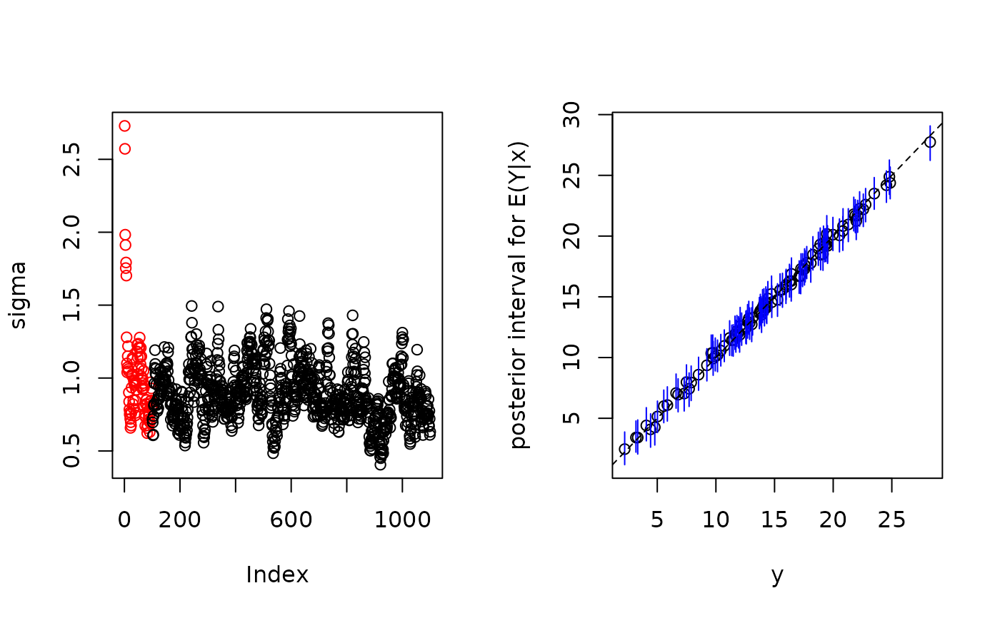

Bayesian Additive Regression Trees
bart.RdBART is a Bayesian “sum-of-trees” model in which each tree is constrained by a prior to be a weak learner.
For numeric response \(y = f(x) + \epsilon\), where \(\epsilon \sim N(0, \sigma^2)\).
For binary response \(y\), \(P(Y = 1 \mid x) = \Phi(f(x))\), where \(\Phi\) denotes the standard normal cdf (probit link).
bart2fits further response families - logistic, accelerated failure time (family = "aft"), K-category multinomial (family = "multinomial"), ordered categorical (family = "ordinal", a cumulative probit), and negative-binomial counts (family = "nbinom") - through itsfamilyargument, described below.
Usage
bart(
x.train, y.train, x.test = matrix(0.0, 0, 0),
sigest = NA, sigdf = 3, sigquant = 0.90,
k = 2.0,
power = 2.0, base = 0.95, splitprobs = 1 / numvars,
binaryOffset = 0.0, weights = NULL,
ntree = 200,
ndpost = 1000, nskip = 100,
printevery = 100, keepevery = 1, keeptrainfits = TRUE,
usequants = FALSE, numcut = 100, printcutoffs = 0,
verbose = TRUE, nchain = 1, nthread = 1, combinechains = TRUE,
keeptrees = FALSE, keepcall = TRUE, sampleronly = FALSE,
seed = NA_integer_,
proposalprobs = NULL,
keepsampler = keeptrees,
resid.dist = gaussian)
bart2(
formula, data, test, subset, weights, offset, offset.test = offset,
sigest = NA_real_, sigdf = 3.0, sigquant = 0.90,
k = NULL,
power = 2.0, base = 0.95, split.probs = 1 / num.vars,
dart = FALSE,
n.trees = 75L,
n.samples = 500L, n.burn = 500L,
n.chains = 4L, n.threads = min(dbarts::guessNumCores(), n.chains),
combineChains = TRUE,
n.cuts = 100L, useQuantiles = FALSE,
n.thin = 1L, keepTrainingFits = TRUE,
printEvery = 100L, printCutoffs = 0L,
verbose = TRUE, keepTrees = FALSE,
keepCall = TRUE, samplerOnly = FALSE,
seed = NA_integer_,
proposal.probs = NULL,
keepSampler = keepTrees,
warm.start = NULL,
n.grow.sweeps = 0L,
factors = c("categorical", "indicators"),
family = c("auto", "gaussian", "probit", "logistic", "aft", "multinomial",
"ordinal", "nbinom", "hazard", "hazard.probit",
"hazard.logistic"),
missing = c("incorporate", "error"),
resid.dist = gaussian,
dispersion = NA_real_,
breaks = NULL, max.rows = 1e7,
...)
# S3 method for class 'bart'
plot(
x,
plquants = c(0.05, 0.95), cols = c('blue', 'black'),
...)
# S3 method for class 'bart'
predict(
object, newdata, offset, weights,
type = c("ev", "ppd", "bart"),
combineChains = TRUE,
n.threads,
ci.level = NULL,
...)
extract(object, ...)
# S3 method for class 'bart'
extract(
object,
type = c("ev", "ppd", "bart", "loglik", "trees"),
sample = c("train", "test"),
combineChains = TRUE, ...)
# S3 method for class 'bart'
fitted(
object,
type = c("ev", "ppd", "bart"),
sample = c("train", "test"),
ci.level = NULL,
...)
# S3 method for class 'bart'
residuals(object, type = "ev", ...)
# S3 method for class 'bartMultinomial'
extract(
object,
type = c("ev", "ppd", "bart"),
sample = c("train", "test"), ...)
# S3 method for class 'bartMultinomial'
fitted(object, type = c("ev", "class"), ...)
# S3 method for class 'bartMultinomial'
predict(
object, newdata,
type = c("ev", "ppd"),
combineChains = TRUE, ...)
# S3 method for class 'bartMultinomial'
print(x, ...)
# S3 method for class 'bartMultinomial'
residuals(object, ...)
# S3 method for class 'bartMultinomial'
plot(x, cols = NULL, ...)
# S3 method for class 'bartMultinomial'
summary(object, ...)Arguments
- x.train
Explanatory variables for training (in sample) data. May be a matrix or a data frame, with rows corresponding to observations and columns to variables. If a variable is a factor in a data frame, it is replaced with dummies. Note that \(q\) dummies are created if \(q > 2\) and one dummy is created if \(q = 2\), where \(q\) is the number of levels of the factor. A sparse
Matrix::dgCMatrixof ordinal predictors is also accepted, as is a data frame mixing ordinary columns withMatrix::sparseVectorordgCMatrixcolumns; seedbarts.- y.train
Dependent variable for training (in sample) data. If
y.trainis numeric a continuous response model is fit (normal errors). Ify.trainis a two-level factor (or logical, or two-level character) or has only values 0 and 1, then a binary response model with a probit link is fit. A factor with three or more levels is an error directing tobart2'sfamily = "multinomial"(unordered) orfamily = "ordinal"(ordered), neither of whichbartfits.- x.test
Explanatory variables for test (out of sample) data. Should have same column structure as
x.train.bartwill generate draws of \(f(x)\) for each \(x\) which is a row ofx.test.- sigest
For continuous response models, an estimate of the residual standard deviation (residual standard error), \(\sigma\), used to calibrate an inverse-chi-squared prior on the error variance. If not supplied, the least-squares estimate is derived instead. See
sigquantfor more information. Not applicable when \(y\) is binary. Same concept assigmaindbartsandxbart.- sigdf
Degrees of freedom for error variance prior. Not applicable when \(y\) is binary. Default 3, Chipman, George, and McCulloch's calibration (see References); an aggressive choice rather than a derived one.
- sigquant
The quantile of the error variance prior that the rough estimate (
sigest) is placed at. The closer the quantile is to 1, the more aggressive the fit will be as you are putting more prior weight on error standard deviations (\(\sigma\)) less than the rough estimate. Not applicable when \(y\) is binary. Default 0.90, from the same source assigdf.- resid.dist
The residual error law for a continuous (gaussian) response, passed through to
dbarts. The defaultgaussian()gives normal errors;student(df)fits outlier-robust Student-t errors by a Gaussian scale-mixture augmentation, withstudent(df = nu)fixing the degrees of freedom andstudent()estimating them on a capped grid. Only continuous gaussian responses carry it (an error otherwise). Two caveats: with a flexible tree-forest mean, tail inference is partially confounded with fit flexibility, so an estimated \(\nu\) should be posterior-checked; and \(\sigma\) is then the conditional scale, the marginal residual variance being \(\sigma^2\,\nu/(\nu-2)\). Seedbartsfor the full description.- dispersion
The negative-binomial dispersion \(r\) (
family = "nbinom"only; ignored otherwise), passed through todbarts.NA(the default) estimates \(r\) on a capped positive-integer grid under a renormalized \(\mathrm{gamma}(2, 0.1)\) prior; a supplied value fixes it and must be a positive integer (v1 ships the exact integer envelope, so a real fixed dispersion is refused). Larger \(r\) approaches the Poisson limit; smaller \(r\) is more overdispersed.- breaks, max.rows
Discrete-time hazard controls (
family = "hazard"only; ignored otherwise), passed through todbarts.breakssets the period grid:NULL(the default) uses the sorted distinct observed times, a single positive integer bins at that many quantiles, and a numeric boundary vector gives explicit right-closed intervals.max.rows(default \(10^7\)) refuses an over-large person-period expansion, naming the coarsening levers.- k
For numeric \(y\),
kis the number of prior standard deviations \(E(Y|x) = f(x)\) is away from \(\pm 0.5\). The response (y.train) is internally scaled to range from \(-0.5\) to \(0.5\). For binary \(y\) fit with the default probit link,kis the number of prior standard deviations \(f(x)\) is away from \(\pm 3\), the probit reference scale;family = "logistic"(bart2only) widens this to \(\pm \pi \sqrt{3}\), the standard deviation of the standard logistic latent variable. In both cases, the bigger \(k\) is, the more conservative the fitting will be. The value can be either a fixed number, or a hyperprior of the formchi(degreesOfFreedom = 1.5, scale = 2). Forbart2, the default ofNULLuses the value 2 for continuous responses and thechi(1.5, 2)hyperprior for binary ones, which centers the sampledknear the field-standard fixed value of 2 (prior median 1.9) while adapting to the data; passk = 2for the fixed BART-package default, orchi(1.5, Inf)for the old improper prior. The default of 2 for continuous responses follows Chipman, George, and McCulloch's argument (see References) that with node prior standard deviation \(\sigma_\mu = 0.5 / (k \sqrt{m})\) for \(m\) trees, \(k\) prior standard deviations of \(f(x)\) span the whole coded response range regardless of \(m\) – so \(k = 2\) places that range at roughly a 95% prior interval. The range scaling itself is an outlier-sensitive convention shared with BayesTree/bartMachine: extreme \(y\) values compress the effective prior on everything else, for which the published workaround is to log-transform or winsorize such values before fitting, or to letkadapt via thechihyperprior.- power
Power parameter for tree prior. Default 2, Chipman, George, and McCulloch's empirical recommendation (see References) for the split-probability decay \(base (1 + depth)^{-power}\), not derived from a formula.
- base
Base parameter for tree prior. Default 0.95, from the same source as
power.- splitprobs, split.probs
Prior and transition probabilities of variables used to generate splits. Can be missing/empty/
NULLfor equiprobability, a numeric vector of length equal to the number variables, or a named numeric vector with only a subset of the variables specified and a.defaultnamed value. Values given for factor variables are replicated for each resulting column in the generated model matrix.numvarsandnum.varssymbols will be rebound before execution to the number of columns in the model matrix.- dart
TRUEplaces a DART prior (a Dirichlet prior over the split-variable probabilities, inducing variable selection; Linero 2018) on the trees with default settings, usingpowerandbasefor the growth probabilities; a prior created bydbartsPriors$dartsupplies its own settings, overridingpowerandbase. Cannot be combined withsplit.probs. Per-sample probabilities are returned in thevarprobselement of the fit.- binaryOffset
Used for binary \(y\). When present, the model is \(P(Y = 1 \mid x) = \Phi(f(x) + \mathrm{binaryOffset})\), allowing fits with probabilities shrunk towards values other than \(0.5\). \(\Phi\) is the link for the default probit family;
bart2fits withfamily = "logistic"useplogisinstead, as noted in the value section below.- weights
An optional vector of weights to be used in the fitting process. For a gaussian response, BART fits a model with observations \(y \mid x \sim N(f(x), \sigma^2 / w)\), where \(f(x)\) is the unknown function. A probit fit (
bart, orbart2with the default binary family) does not support weights, except that weights identically 1 are treated as absent;bart2withfamily = "logistic"treats them as observation counts and requires positive integers. For a weighted logistic fit, the"ppd"draw at an observation with weight \(w\) is the number of successes among \(w\) trials, \(\mathrm{Binomial}(w, p)\) with \(p\) the fitted probability.- ntree, n.trees
The number of trees in the sum-of-trees formulation.
- ndpost, n.samples
The number of posterior draws after burn in,
ndpost / keepeverywill actually be returned.- nskip, n.burn
Number of MCMC iterations to be treated as burn in.
- printevery, printEvery
As the MCMC runs, a message is printed every
printeverydraws.- keepevery, n.thin
Every
keepeverydraw is kept to be returned to the user. Useful for “thinning” samples.- keeptrainfits, keepTrainingFits
If
TRUEthe draws of \(f(x)\) for \(x\) corresponding to the rows ofx.trainare returned.- usequants, useQuantiles
When
TRUE, determine tree decision rules using estimated quantiles derived from thex.trainvariables. WhenFALSE, splits are determined using values equally spaced across the range of a variable. See details for more information.- numcut, n.cuts
The maximum number of possible values used in decision rules (see
usequants, details). If a single number, it is recycled for all variables; otherwise must be a vector of length equal toncol(x.train). Fewer rules may be used if a covariate lacks enough unique values.- printcutoffs, printCutoffs
The number of cutoff rules to printed to screen before the MCMC is run. Given a single integer, the same value will be used for all variables. If 0, nothing is printed.
- verbose
Logical; if
FALSEsuppress printing.- nchain, n.chains
Integer specifying how many independent tree sets and fits should be calculated. Default 1 for
bart, BayesTree's historical single-chain convention;bart2's (andrbart_vi's) default is 4.- nthread, n.threads
Integer specifying how many threads to use. Depending on the CPU architecture, using more than the number of chains can degrade performance for small/medium data sets. As such some calculations may be executed single threaded regardless.
- combinechains, combineChains
Logical; if
TRUE, samples will be returned in arrays of dimensions equal tonchain\(\times\)ndpost\(\times\) number of observations. DefaultTRUEacrossbart,bart2, andrbart_vi; the number of chains is tracked regardless on the returned object'sn.chainscomponent (see ‘Value’).- keeptrees, keepTrees
Logical; must be
TRUEin order to usepredictwith the result of abartfit. Note that for models with a large number of observations or a large number of trees, keeping the trees can be very memory intensive.- keepcall, keepCall
Logical; if
FALSE, returned object will havecallset tocall("NULL"), otherwise the call used to instantiate BART.- seed
Optional integer specifying the desired pRNG seed. A
set.seedbeforehand suffices for reproducibility; supplyingseedinstead gives reproducible results without touching R's stream. See Reproducibility section below.- proposalprobs, proposal.probs
Named numeric vector or
NULL, optionally specifying the proposal rules and their probabilities. Elements should be"birth_death","change", and"swap"to control tree change proposals, and"birth"to give the relative frequency of birth/death in the"birth_death"step. Defaults are 0.5, 0.1, 0.4, and 0.5 respectively.- keepsampler, keepSampler
Logical that can be used to save the underlying
dbartsSampler-classobject even ifkeepTreesis false.- warm.start
bart2only. A previous fit whose forests seed the initial state instead of drawing trees from the prior: either abartobject fit withkeepSampler = TRUEor adbartsSampler-class. The donor must share this fit's predictors, tree count, cut grid, and DART setting; only its trees,sigma, andkcarry over, and each chain starts from a different donor sample so multiple chains stay overdispersed. A warm start biases early draws toward the donor, so it shortens burn-in rather than removing it; keep a non-zeron.burn. SeedbartsSampler-class'sinstallTreesmethod for finer control.- n.grow.sweeps
bart2only. A non-negative integer; when positive, the initial forest is built byn.grow.sweepssweeps of XBART-style grow-from-root (He, Yalov and Hahn 2019) instead of a draw from the prior, an init-then-refine workflow that reaches a good fit in far fewer sweeps before the exact sampler takes over. The default0Ldraws trees from the prior, exactly as before. Likewarm.start, a grow-from-root start biases the early draws toward the grown fit, so it shortens burn-in rather than removing it; keep a non-zero (if smaller)n.burn. The posterior the sampler targets is unchanged - only the starting point moves. Constant-leaf models only, and mutually exclusive withwarm.start(both request an initialization). SeedbartsSampler-class'sgrowFromRootmethod.- factors, family, missing
As in
dbarts;bart2only.bartkeeps the historical behavior: factors always expand into indicator columns (bart2's default,"categorical", instead keeps each unordered factor as a single predictor - a different model-matrix representation, so a factor-predictor fit changes if moved from one interface to the other), binary responses are probit, and missing data are rejected.family = "multinomial"fits a K-category softmax classifier: K forests, one per category, coupled through an interleaved Polya-Gamma one-vs-rest augmentation (seedocs/design/multinomial.md).y.trainmust be a factor (or character, coerced withfactor) with at least two levels and noNAs orNAlevels;K = nlevels(y.train)is inferred, never given explicitly, andlevels(y.train)is captured at fit time and carried on every K-shaped output (yhat.train's trailing dimension,fitted's columns, thefitted(type = "class")factor). Alternatively,y.trainmay be an n x K numeric matrix of nonnegative integer trial counts, one row per observation and one column per category, with row sum (trials) \(n_i \ge 1\): category k's count is then a binomial(\(n_i\), p_k) draw under the same one-vs-rest augmentation,K = ncol(y.train)is inferred, and the levels carried on every K-shaped output arecolnames(y.train)when present, otherwiseas.character(seq_len(K)). A one-hot count matrix (every \(n_i = 1\)) is the same model as the factor response above, reproduced bit for bit. The formula interface is supported alongside the matrix one:bart2(formula, data, family = "multinomial")with a factor (or character) left-hand side routes to the factor response above, and acbind(c1, ..., cK) ~ xleft-hand side (the same idiomglm's binomial family uses) routes to the count-matrix response above,Kand the levels taken from thecbindcolumn names; the right-hand side is coded exactly as it is for every other family's formula fit, includingpredicton a data framenewdata. Under the defaultfamily = "auto", a factor (or character) response with three or more levels is detected and fit as multinomial, reporting the choice in a one-line message; a two-level factor (or logical) response resolves to probit, and a numeric response is unchanged. A count-matrix (cbind(c1, ..., cK) ~ x) response is only ever multinomial whenfamily = "multinomial"is given explicitly - it is never inferred.weights,offset,subset,samplerOnly,warm.start, andn.grow.sweepsare all refused with an error naming the limitation.testis supported: anx.testof the same column structure asx.trainreports the K-category softmax probabilities on the held-out rows asyhat.test, shaped and levels-named exactly likeyhat.train(see ‘Value’).keepTreesis supported too: it retains every one of the K forests' trees sopredictcan replay them at new predictors afterward, reproducingyhat.testbitwise whennewdatamatches the fit-timetest; withoutkeepTrees,predicterrors. The per-forest leaf scale follows its own K-dependent calibration (the K = 2 anchor is the logistic scale \(\pi\sqrt{3}\) divided by \(\sqrt{2}\), for the identified pairwise log-odds);kis read from the usual node prior exactly as for any other family, but the node prior'snode.scaleitself is NOT consulted - the multinomial engine calibrates its own. The fit's class is"bartMultinomial", not"bart": see ‘Value’ below and theextract/fitted/predictmethods forbartMultinomialobjects.family = "ordinal"fits an ordered categorical response by a cumulative probit (a single forest, unlike multinomial's K): a latent \(z = f(x) + \epsilon\) with \(\epsilon \sim N(0, 1)\) is cut at ordered thresholds \(-\infty = \gamma_0 < \gamma_1 = 0 < \gamma_2 < \ldots < \gamma_{K-1} < \gamma_K = \infty\), so \(P(Y = k \mid x) = \Phi(\gamma_k - f(x)) - \Phi(\gamma_{k-1} - f(x))\). The free cutpoints are sampled by a one-at-a-time marginal Metropolis update (latents integrated out) under a log-gap prior \(N(0, 1.5^2)\); at \(K = 2\) the model is exactly the probit family.y.trainshould be an ordered factor (is.ordered); its level order defines the category order, andlevels(y.train)is captured at fit time and carried on every K-shaped output. Under the defaultfamily = "auto", an ordered factor with three or more levels is detected and fit as ordinal, reporting the choice in a one-line message (an unordered factor stays multinomial - the two never overlap, the dispatch key isis.ordered); a two-level ordered factor is binary and resolves to probit. Given explicitly,family = "ordinal"also accepts an unordered factor or character response (with a message that the category order is taken from the level order - usually alphabetical, so order the levels yourself) and a numeric response, whose ordered levels aresort(unique(y.train)).weightsare not supported (a weighted truncated-normal latent likelihood is not a coherent model);samplerOnly,warm.start, andn.grow.sweepsare refused with an error naming the limitation.testandkeepTreesare supported as for multinomial, andpredictreplays the saved trees at new predictors, differencing the cumulative probit at the stored per-draw cutpoints.rbart_viandxbartdo not fit ordinal responses (grouped ordinal models and ordinal-scale cross-validation losses are recorded follow-ups). The fit's class is"bartOrdinal", not"bart": see ‘Value’ below.family = "nbinom"fits a non-negative integer (count) response by a negative-binomial model with the Polya-Gamma augmentation (a single forest, like logistic): the forest fits a log-odds latent \(\psi = f(x) + o\), the count law is \(y_i \sim \mathrm{NB}(r, \mathrm{plogis}(\psi_i))\) with dispersion \(r\), and the mean is \(E[y_i \mid x] = r e^{\psi_i} = r e^{f(x_i) + o_i}\). The offset \(o_i\) therefore enters the mean multiplicatively and is a log-exposure (\(o_i = \log(\mathrm{exposure}_i)\)).y.trainmust be a non-negative integer count, andfamily = "nbinom"is always explicit - a count carries no unambiguous class, so it is never inferred underfamily = "auto"(a numeric response there stays gaussian). The dispersionris estimated by default on a capped positive-integer grid (\(\{1, 2, 3, 4, 5, 6, 8, 10, 12, 15, 20, 30, 50\}\)) under a renormalized \(\mathrm{gamma}(2, 0.1)\) prior by a closed-form discrete full conditional; passingdispersionas a positive integer fixes \(r\) instead (v1 ships the exact integer envelope, so a real fixeddispersionis refused - continuous dispersion is a recorded follow-up). Like probit, the latent scale is fixed at 1 andweightsare not supported (exposure belongs in the offset, not in observation replication);samplerOnly,warm.start, andn.grow.sweepsare refused with an error naming the limitation.testandkeepTreesare supported as for ordinal, andpredictreplays the saved trees at new predictors, reporting mean counts \(r e^{\psi}\) at the stored per-draw dispersion (a log-exposureoffset.testenters \(\psi\) additively).rbart_viandxbartdo not fit count responses (grouped negative-binomial models, real dispersion, and a Poisson family are recorded follow-ups). The fit's class is"bartNegbin", not"bart": see ‘Value’ below.family = "hazard"andfamily = "hazard.logistic"fit a discrete-time survival hazard model as ingestion sugar over the binary families - the model adds no engine code ("hazard.probit"is an accepted alias for"hazard"). The response is the sameSurvobject or two-column(time, status)the"aft"family takes; each subject observed to time \(t_i\) is person-period-expanded into its at-risk rows (one per period \(k = 1, \ldots, t_i\)), each carrying the subject's covariates, an ordinal period column (appended last, so trees split on contiguous periods and borrow strength across time), and the binary indicator \(y_{ik} = \mathrm{status}_i \cdot 1\{k = t_i\}\). The discrete hazard is \(h(k \mid x) = g(f(x, k) + o)\) for the chosen binary link \(g\) (probit for"hazard", logistic for"hazard.logistic"), and the fit is EXACTLY an ordinary"probit"/"logistic"fit on the expanded rows - a hazard fit is byte-identical, draw for draw, to the binary fit on the hand-expanded design with the same seed. The time grid defaults to the sorted distinct observed times (the BARTsurv.bartconvention);breakscoarsens it (a single integer bins at that many quantiles, a boundary vector gives explicit right-closed intervals), andmax.rowsguards the expansion size. Offsets are on the link scale and replicate per subject;weightsreplicate and then follow the chosen binary family's policy (probit refuses non-unit weights, logistic requires integer counts). ASurvresponse requires the family to be requested explicitly (family = "auto"selects"aft"); the matrix interface is required (no formula,subset, ortest- expand held-out subjects withsurvivalProbabilities(fit, times, newdata = ), which needskeepTrees). The returned object is an ordinary"bart"fit whose$familyrecords the binary link (so every prediction generic transforms correctly with no special case) and whose$periodselement carries the grid;predict/extractreturn the per-(subject, period) hazards on the expanded rows, andsurvivalProbabilitiesproduces survival-curve draws \(S(t \mid x) = \prod_{k : \mathrm{periods}[k] \le t} (1 - h(k \mid x))\).rbart_viandxbartdo not fit hazard responses (grouped/frailty hazard and aclogloglink are recorded follow-ups).- formula
The same as
x.train, the name reflecting that a formula object can be used instead.- data
The same as
y.train, the name reflecting that a data frame can be specified when a formula is given instead.- test
The same as
x.train. Can be missing.- subset
A vector of logicals or indices used to subset of the data. Can be missing.
- offset
The same as
binaryOffset. Can be missing.- offset.test
A vector of offsets to be used with test data, in case it is different than the training offset. If
offset.testis missing, defaults toNULL.- object
An object of class
bart, returned from either the functionbartorbart2.- newdata
Test data for prediction. Obeys all the same rules as
x.trainbut cannot be missing.- sampleronly, samplerOnly
Builds the sampler from its arguments and returns it without running it. Useful to use the
bart2interface in more complicated models.- x
Object of class
bart, returned by functionbart, which contains the information to be plotted.- plquants
In the plots, beliefs about \(f(x)\) are indicated by plotting the posterior median and a lower and upper quantile.
plquantsis a double vector of length two giving the lower and upper quantiles.- cols
Vector of two colors. First color is used to plot the median of \(f(x)\) and the second color is used to plot the lower and upper quantiles.
- type
The quantity to be returned by generic functions. Options are
"ev"- samples from the posterior of the individual level expected value,"bart"- the sum of trees component; same as"ev"for linear models but on the latent scale (probit or logistic, matching the fit's family) for binary ones,"ppd"- samples from the posterior predictive distribution,"loglik"- forextractonly, the log-likelihood of each training observation at each posterior draw, and"trees"- a data frame with tree information for when model was fit withkeepTreesequal toTRUE. For"ppd", a weighted logistic fit draws the number of successes among the observation-count weight, \(\mathrm{Binomial}(w_i, p_i)\) (seeweights), and an aft (survival) fit draws on the log-time scale (the fit models \(\log T\)). For"loglik", gaussian fits evaluate \(y_i \mid x_i \sim N(\hat{f}(x_i), \sigma^2 / w_i)\) in logs at each draw of \(f\) and \(\sigma\), binary fits evaluate the Bernoulli log-likelihood of the fitted probability, multiplied for a weighted logistic fit by the observation-count weight \(w_i\), and an aft fit contributes the log density for an event and the log survival tail \(\log P(T > C)\) for a right-censored observation, both on the log-time scale. When chains are combined the result is a samples-by-observations matrix directly consumable by WAIC/PSIS-LOO implementations such as those in the loo package; the chains-first convention is kept, so a per-chain array (combineChains = FALSE, dimension chains-by-samples-by-observations) is reordered to the draws-by-chains-by-observations thatloo::relative_effexpects withaperm(x, c(2, 1, 3)). To synergize withpredict.glm,"response"can be used as a synonym for"ev"and"link"can be used as a synonym for"bart". For information on extracting trees, see the subsection below.- sample
Either
"train"or"test".- ci.level
For
fittedandpredict, an optional single number in \((0, 1)\). WhenNULL(the default) the posterior mean is returned as before. When given, the result is instead a matrix with one row per observation and columnsest(the posterior mean),ci.lower, andci.uppergiving a symmetric credible band at that level, pooled over all samples and chains. The kind of interval followstype:"ev"yields a credible interval for the conditional mean (a probability for binary responses),"ppd"a prediction interval that additionally carries the residual noise (and so is wider), and"bart"a credible interval on the latent scale.- ...
Additional arguments passed on to
plot,dbartsControl, orextractwhentypeis"trees". Not used inpredict.
Details
BART is an Bayesian MCMC method. At each MCMC interation, we produce a draw from the joint posterior \((f, \sigma) \mid (x, y)\) in the numeric \(y\) case and just \(f\) in the binary \(y\) case.
Thus, unlike a lot of other modeling methods in R, bart does not produce a single model object from which fits and summaries may be extracted. The output consists of values \(f^*(x)\) (and \(\sigma^*\) in the numeric case) where * denotes a particular draw. The \(x\) is either a row from the training data (x.train) or the test data (x.test).
Decision Rules
Decision rules for any tree are of the form \(x \le c\) vs. \(x > c\) for each ‘\(x\)’ corresponding to a column of x.train. usequants determines the means by which the set of possible \(c\) is determined. If usequants is TRUE, then the \(c\) are a subset of the values interpolated half-way between the unique, sorted values obtained from the corresponding column of x.train. If usequants is FALSE, the cutoffs are equally spaced across the range of values taken on by the corresponding column of x.train.
The number of possible values of \(c\) is determined by numcut. If usequants is FALSE, numcut equally spaced cutoffs are used covering the range of values in the corresponding column of x.train. If usequants is TRUE, then for a variable the minimum of numcut and one less than the number of unique elements for that variable are used.
End-node prior parameter k
The amount of shrinkage of the node parameters is controlled by k. k can be given as either a fixed, positive number, or as any value that can be used to build a supported hyperprior. At present, only \(\chi_\nu s\) priors are supported, where \(\nu\) is a degrees of freedom and \(s\) is a scale. Both values must be positive, however the scale can be infinite which yields an improper prior, which is interpreted as just the polynomial part of the distribution. If \(nu\) is 1 and \(s\) is \(\infty\), the prior is “flat”.
For BART on binary outcomes, the degree of overfitting can be highly sensitive to k so it is encouraged to consider a number of values. The default hyperprior for binary bart2/dbarts fits, chi(1.5, 2), centers the sampled k near the field-standard fixed value of 2 (prior median 1.9) while adapting to the data; pass k = 2 for the fixed BART-package default. Crossvalidation may still be helpful, and running for a short time with a flat prior (scale = Inf) can show the range of k values the data are consistent with.
Generics
bart and rbart_vi support fitted to return the posterior mean of a predicted quantity, as well as predict to return a set of posterior samples for a different sample. In addition, the extract generic can be used to obtain the posterior samples for the training data or test data supplied during the initial fit.
Using predict with a bart object requires that it be fitted with the option keeptrees/keepTrees as TRUE. Keeping the trees for a fit can require a sizeable amount of memory and is off by default.
All generics return values on the scale of expected value of the response by default. This means that predict, extract, and fitted for binary outcomes return probabilities unless specifically the sum-of-trees component is requested (type = "bart"). This is in contrast to yhat.train/yhat.test that are returned with the fitted model.
residuals returns \(y\) minus fitted(object, type = type, sample = "train"); the default type = "ev" gives ordinary response-scale residuals, so for a binary fit this is \(y - P(Y = 1 \mid x)\). Binary fits do not have yhat.train.mean/yhat.test.mean components (see ‘Value’); use fitted to obtain the equivalent posterior-mean probabilities directly.
Saving
saveing and loading a fitted BART object for use with predict requires that it be fit with keeptrees/keepTrees as TRUE, and that the sampler's tree state be captured before saving by calling storeState() on the sampler: bartFit$fit$storeState() (for rbart_vi, on each element of fit: lapply(rbartFit$fit, function(f) f$storeState())). The state is not captured automatically because it duplicates the trees on the R side and can exceed the fit's own sample blocks; it is materialized only on request. A fit saved without it reloads, but predict stops with an error naming storeState().
Reproducibility
Every chain runs its own pseudo random number generator, so worker threads never touch R's generator and results do not depend on the thread count. Without a seed, chain generators are seeded from R's stream when the sampler is created, so calling set.seed beforehand makes results reproducible. Sampling itself never advances R's stream: after a fit, .Random.seed has moved only by the draws taken at creation.
Setting seed makes results reproducible without involving R's stream at all: the seed drives a dedicated generator that hands each chain its own seed. A single-chain run with a given seed reproduces the first chain of a multi-chain run with the same seed.
Extracting Trees
When a model is fit with keeptrees (bart) or keepTrees (bart2) equal to TRUE, the generic extract can be used to retrieve a data frame containing the tree fit information. In this case, extract will accept the additional, optional arguments: chainNums, sampleNums, and treeNums. Each should be an integer vector detailing the desired trees to be returned. A further optional argument newdata routes a new set of predictors (in the same form accepted by predict) through the frozen trees so that the n column counts those observations instead of the training data.
The result of extract will be a data frame with columns:
chain,sample,tree- index variablesn- number of observations in node, drawn from the training data or fromnewdatawhen suppliedvar- either the index of the variable used for splitting or -1 if the node is a leafvalue- either the value such that observations less than or equal to it are sent down the left path of the tree or the predicted value for a leaf node
The order of nodes in the result corresponds to a depth-first traversal, going down the left-side first. The names of variables used in splitting can be recovered by examining the column names of the fit$data@x element of a fitted bart or bart2 model. See the package vignette “Working with dbarts Saved Trees”.
Value
bart and bart2 return lists assigned the class bart. For applicable quantities, ndpost / keepevery samples are returned. In the numeric \(y\) case, the list has components:
yhat.trainA array/matrix of posterior samples. The \((i, j, k)\) value is the \(j\)th draw of the posterior of \(f\) evaluated at the \(k\)th row of
x.train(i.e. \(f^*(x_k)\)) corresponding to chain \(i\). Whennchainis one orcombinechainsisTRUE, the result is a collapsed down to a matrix.yhat.testSame as
yhat.trainbut now the \(x\)s are the rows of the test data.yhat.train.meanVector of means of
yhat.trainacross columns and chains, with length equal to the number of training observations.yhat.test.meanVector of means of
yhat.testacross columns and chains.sigmaMatrix of posterior samples of
sigma, the residual/error standard deviation. Dimensions are equal to the number of chains times the numbers of samples unlessnchainis one orcombinechainsisTRUE.first.sigmaBurn-in draws of
sigma.varcountA matrix with number of rows equal to the number of kept draws and each column corresponding to a training variable. Contains the total count of the number of times that variable is used in a tree decision rule (over all trees).
varprobsPresent only under a DART prior: the sampled split-variable probabilities, in the same layout as
varcount. Each draw sums to one across variables.sigestThe rough error standard deviation (\(\sigma\)) used in the prior.
yThe input dependent vector of values for the dependent variable. This is used in
plot.bart.fitOptional sampler object which stores the values of the tree splits. Required for using
predictand only stored ifkeeptreesorkeepsamplerisTRUE.n.chainsInformation that can be lost if
combinechainsisTRUEis tracked here.kOptional matrix of posterior samples of
k. Only present whenkis modeled, i.e. there is a hyperprior.first.kBurn-in draws of
k, if modeled.familyThe resolved response family (
"gaussian","probit","logistic", or"aft").predict,extract,fitted, andplotuse it to transform latent draws to probabilities. For an"aft"fit, predictions and fitted values are on the LOG-TIME scale: these functions return the linear predictor \(E[\log T \mid x]\), exactly as for a gaussian fit of \(\log T\), and never the time scale thatsurvregorflexsurvusers might expect. Thetypealiases"response"and"link"are inert for"aft"- both return the same log-scale linear predictor; neither exponentiates. The posterior-median survival time isexpof the linear predictor, andsurvivalProbabilitiesgives survival-probability draws. A discrete-time hazard fit (family = "hazard"/"hazard.logistic") records the binary link here ("probit"/"logistic") - the fit IS that binary fit on the expanded rows - and carries a separate$periodselement (the ordered period grid);predict/extractreturn the per-(subject, period) hazard through the link, andsurvivalProbabilitiesdispatches its survival-curve branch on the$periodsmarker.
In the binary \(y\) case, the returned list has the components yhat.train, yhat.test, and varcount as above, but not yhat.train.mean/yhat.test.mean - use fitted to get the posterior mean of \(P(Y = 1 \mid x)\) instead. In addition the list has a binaryOffset component giving the value used.
Note that in the binary \(y\), case yhat.train and yhat.test are \(f(x) + \mathrm{binaryOffset}\). For draws of the probability \(P(Y = 1 | x)\), apply the family's inverse link to these values: the normal cdf (pnorm) for "probit" fits, plogis for "logistic" ones.
bart2(family = "multinomial") returns a different list, of class "bartMultinomial" (never "bart" - its generics are separate, below, precisely so a K-category fit cannot silently flow through a method that assumes the single-category shape). Components: call, family ("multinomial"), levels (the resolved category names, length K: levels(y.train) for a factor response, or colnames(y.train) - falling back to as.character(seq_len(K)) when unnamed - for a count-matrix response), K, n.chains, n.trees, y (the original response: the factor y.train, or the validated n x K count matrix when a count response was supplied), and yhat.train - the posterior draws of the K softmax probabilities, an array of dimension (n.chains \(\times\), when n.chains > 1 and combineChains = FALSE) n.samples \(\times\) number of training observations \(\times\) K, with the resolved category levels as the trailing dimension's names; combineChains = TRUE (the default) folds the chain margin into the samples margin as usual. yhat.train already holds PROBABILITIES, not a latent score - there is no "bart"-scale component to convert, unlike the binary families. When test was supplied, yhat.test is the same K softmax probabilities on the held-out rows, dimensioned like yhat.train with the training-observation margin replaced by the test one. varcount is the per-sample per-category split-usage channel: each category forest's per-draw variable counts, dimensioned like yhat.train but with the number of training predictors in place of the number of observations, and colnames(x.train) (when present) named on that margin. bc and fit are present only under keepTrees - the K-forest sampler handle and the host sampler predict.bartMultinomial replays through; absent keepTrees, neither survives the call and predict errors.
Generics for a "bartMultinomial" fit: fitted(object) (type = "ev", the default) returns the posterior-mean n \(\times\) K probability matrix, columns named by the fit's captured levels; fitted(object, type = "class") returns the argmax of that mean matrix as a factor over the original levels - a classification convenience. extract(object, type = "ev", sample = "train") returns the full yhat.train draws, and sample = "test" returns yhat.test (an error if the fit carries no test channel); extract(object, type = "ppd") draws one category per posterior draw from its probability vector, returned as an integer code (1-based, indexing the fit's captured levels) in an array shaped like "ev" minus the K margin. extract/fitted with type = "bart" error, naming the reason: the run records only the identified softmax probabilities (the raw per-category latent fits are non-identified, in the same sense as BCF's \(a\), and are not recorded). predict(object, newdata) requires object fit with keepTrees = TRUE (error otherwise); it codes newdata to the training columns exactly as predict.bart does and returns a levels-named (n.chains \(\times\)) n.samples \(\times\) number of new observations \(\times\) K probability array, the yhat.test/yhat.train convention; type = "ppd" draws one category per posterior draw the same way extract(object, type = "ppd") does; type = "bart" is not offered, for the same non-identification reason. residuals(object) returns an n \(\times\) K matrix, the observed proportion (an indicator for a factor response, y / rowSums(y) for a count-matrix one) minus the fitted probability in fitted(object), per category. plot(object) traces each category's training-mean predicted probability over the kept draws. summary(object) pools that same per-category mean-probability channel into posterior mean/sd/quantiles (R-hat/ESS when the posterior package is installed), the multinomial analog of summary.bart's \(\sigma\)/k/\(\tau\) summary.
bart2(family = "ordinal") likewise returns its own list, of class "bartOrdinal". Components: call, family ("ordinal"), levels (the ordered category names, length K), K, n.chains, n.trees, y (the observed categories as an ordered factor over levels), yhat.train (and yhat.test when test was supplied) - the posterior draws of the K category probabilities, shaped and levels-named exactly as the multinomial arrays above - latent.train (and latent.test) - the corresponding draws of the latent \(f(x)\) on the unit-variance probit scale, shaped like a binary family's yhat.train - cutpoints - the posterior draws of the K - 1 finite thresholds \((\gamma_1 = 0, \gamma_2, \ldots)\), dimensioned draws \(\times\) (K - 1), the ordinal analog of gaussian's sigma, from which probabilities at any latent value can be reconstructed - and varcount. bc, fit, and cutpoints.raw (the per-draw thresholds in the internal layout predict consumes) are present only under keepTrees.
Generics for a "bartOrdinal" fit: fitted(object) returns the posterior-mean n \(\times\) K probability matrix (columns named by levels); fitted(object, type = "class") the argmax category of that mean as an ordered factor; fitted(object, type = "bart") the posterior-mean latent. extract(object, type = "ev") returns the probability draws, type = "bart" (alias "link") the latent draws, and type = "ppd" draws one category per posterior draw (1-based codes indexing levels). predict(object, newdata) requires keepTrees = TRUE and returns the probability draws at newdata (type = "bart" the replayed latent; type = "ppd" category draws); when newdata matches the fit-time test it reproduces yhat.test. residuals(object) returns the n \(\times\) K matrix of observed-indicator minus fitted probability.
bart2(family = "nbinom") likewise returns its own list, of class "bartNegbin". Components: call, family ("nbinom"), n.chains, n.trees, y (the observed counts), yhat.train (and yhat.test when test was supplied) - the posterior draws of the mean counts \(\mu = r e^{f(x) + o}\), shaped like a binary family's yhat.train - latent.train (and latent.test) - the corresponding draws of the log-odds latent \(\psi = f(x) + o\) - dispersion - the per-draw dispersion \(r\), the count analog of gaussian's sigma - and varcount. bc, fit, and dispersion.raw (the per-draw \(r\) in the internal layout predict consumes) are present only under keepTrees.
Generics for a "bartNegbin" fit: fitted(object) returns the posterior-mean count per observation; fitted(object, type = "bart") the posterior-mean log-odds latent. extract(object, type = "ev") returns the mean-count draws, type = "bart" the latent draws, and type = "ppd" draws one count per posterior draw from \(\mathrm{NB}(r, \mathrm{plogis}(\psi))\); sample = "test" selects the test channel. predict(object, newdata) requires keepTrees = TRUE and returns the mean-count draws at newdata (type = "bart" the replayed latent; type = "ppd" count draws), with an optional log-exposure offset.test; when newdata matches the fit-time test and no offset is given it reproduces yhat.test. residuals(object) returns the observed count minus the posterior-mean count per observation.
For continuous response fits, the plot method sets mfrow to c(1, 2) and makes two plots. The first plot is the sequence of kept draws of \(\sigma\) including the burn-in draws. Initially these draws will decline as BART finds a good fit and then level off when the MCMC has burnt in. The second plot has \(y\) on the horizontal axis and posterior intervals for the corresponding \(f(x)\) on the vertical axis. For binary response fits, only this second kind of plot is drawn, with the posterior median of \(P(Y = 1 \mid x)\) on the horizontal axis and its posterior interval on the vertical axis.
References
Chipman, H., George, E., and McCulloch, R. (2009) BART: Bayesian Additive Regression Trees.
Chipman, H., George, E., and McCulloch R. (2006) Bayesian Ensemble Learning. Advances in Neural Information Processing Systems 19, Scholkopf, Platt and Hoffman, Eds., MIT Press, Cambridge, MA, 265-272.
both of the above at: https://www.rob-mcculloch.org
Friedman, J.H. (1991) Multivariate adaptive regression splines. The Annals of Statistics, 19, 1–67.
Linero, A.R. (2018) Bayesian regression trees for high-dimensional prediction and variable selection. Journal of the American Statistical Association, 113(522), 626–636.
Author
Hugh Chipman: hugh.chipman@gmail.com, Robert McCulloch: robert.mcculloch1@gmail.com, Vincent Dorie: vdorie@gmail.com.
Examples
## simulate data (example from Friedman MARS paper)
## y = f(x) + epsilon , epsilon ~ N(0, sigma)
## x consists of 10 variables, only first 5 matter
f <- function(x) {
10 * sin(pi * x[,1] * x[,2]) + 20 * (x[,3] - 0.5)^2 +
10 * x[,4] + 5 * x[,5]
}
set.seed(99)
sigma <- 1.0
n <- 100
x <- matrix(runif(n * 10), n, 10)
Ey <- f(x)
y <- rnorm(n, Ey, sigma)
## run BART
set.seed(99)
bartFit <- bart(x, y)
#>
#> Running BART with numeric y
#>
#> number of trees: 200
#> number of chains: 1, default number of threads 1
#> tree thinning rate: 1
#> Prior:
#> k prior fixed to 2.000000
#> degrees of freedom in sigma prior: 3.000000
#> quantile in sigma prior: 0.900000
#> scale in sigma prior: 0.002181
#> power and base for tree prior: 2.000000 0.950000
#> use quantiles for rule cut points: false
#> proposal probabilities: birth/death 0.50, swap 0.10, change 0.40; birth 0.50
#> data:
#> number of training observations: 100
#> number of test observations: 0
#> number of explanatory variables: 10
#> init sigma: 2.756573, curr sigma: 2.756573
#>
#> Cutoff rules c in x<=c vs x>c
#> Number of cutoffs: (var: number of possible c):
#> (1: 100) (2: 100) (3: 100) (4: 100) (5: 100)
#> (6: 100) (7: 100) (8: 100) (9: 100) (10: 100)
#>
#> Running mcmc loop:
#> iteration: 100 (of 1000)
#> iteration: 200 (of 1000)
#> iteration: 300 (of 1000)
#> iteration: 400 (of 1000)
#> iteration: 500 (of 1000)
#> iteration: 600 (of 1000)
#> iteration: 700 (of 1000)
#> iteration: 800 (of 1000)
#> iteration: 900 (of 1000)
#> iteration: 1000 (of 1000)
#> total seconds in loop: 0.219331
#>
#> Tree sizes, last iteration:
#> [1] 2 3 3 2 2 2 2 2 4 2 3 3 3 1 2 1 2 3
#> 2 2 4 2 2 3 3 2 2 2 2 3 2 2 2 1 3 3 2 2
#> 2 2 3 4 2 2 2 4 3 2 2 3 1 2 3 2 2 3 3 2
#> 3 2 2 2 2 3 2 2 3 2 2 2 2 2 2 2 2 3 2 2
#> 2 2 2 2 3 5 2 2 3 2 2 2 1 3 2 2 2 3 2 2
#> 1 2 5 1 3 3 3 4 2 2 2 2 3 2 2 2 2 2 2 1
#> 2 4 2 2 2 2 3 2 2 2 2 4 2 2 3 2 2 2 2 3
#> 2 3 2 2 2 2 2 1 2 4 4 3 2 4 4 3 2 1 2 3
#> 3 4 3 2 3 2 2 2 2 2 2 4 2 3 2 3 3 2 2 2
#> 3 2 2 3 2 2 2 4 4 2 3 1 3 2 2 2 1 3 2 4
#> 2 2
#>
#> Variable Usage, last iteration (var:count):
#> (1: 34) (2: 29) (3: 29) (4: 30) (5: 25)
#> (6: 25) (7: 36) (8: 21) (9: 28) (10: 16)
#>
#> DONE BART
#>
plot(bartFit)

## compare BART fit to linear matter and truth = Ey
lmFit <- lm(y ~ ., data.frame(x, y))
fitmat <- cbind(y, Ey, lmFit$fitted, bartFit$yhat.train.mean)
colnames(fitmat) <- c('y', 'Ey', 'lm', 'bart')
print(cor(fitmat))
#> y Ey lm bart
#> y 1.0000000 0.9847984 0.8841787 0.9984931
#> Ey 0.9847984 1.0000000 0.9009389 0.9886903
#> lm 0.8841787 0.9009389 1.0000000 0.8975062
#> bart 0.9984931 0.9886903 0.8975062 1.0000000
## binary response with a logistic link, via bart2
set.seed(0)
n <- 60L
x.bin <- matrix(runif(n * 2), n, 2)
f.bin <- 3 * x.bin[,1] - 1.5
y.bin <- rbinom(n, 1L, plogis(f.bin))
fit.logit <- bart2(y.bin ~ x.bin, family = "logistic",
n.samples = 20L, n.burn = 20L, n.chains = 1L,
n.trees = 20L, n.threads = 1L)
#>
#> Running BART with binary y
#>
#> number of trees: 20
#> number of chains: 1, default number of threads 1
#> tree thinning rate: 1
#> Prior:
#> prior on k: chi with 1.500000 degrees of freedom and 2.000000 scale
#> power and base for tree prior: 2.000000 0.950000
#> use quantiles for rule cut points: false
#> proposal probabilities: birth/death 0.50, swap 0.10, change 0.40; birth 0.50
#> data:
#> number of training observations: 60
#> number of test observations: 0
#> number of explanatory variables: 2
#>
#> Cutoff rules c in x<=c vs x>c
#> Number of cutoffs: (var: number of possible c):
#> (1: 100) (2: 100)
#> Running mcmc loop:
#> total seconds in loop: 0.001343
#>
#> Tree sizes, last iteration:
#> [1] 2 3 3 2 3 2 2 2 2 3 2 2 2 3 3 2 2 3
#> 2 2
#>
#> Variable Usage, last iteration (var:count):
#> (1: 13) (2: 14)
#> DONE BART
#>
## fit with missing predictor values, using missing = "incorporate"
## (the default): every split rule learns a direction for NAs
set.seed(1)
x.na <- x.bin
x.na[1:5, 1] <- NA
y.na <- x.na[,2] + rnorm(n, 0, 0.3)
y.na[is.na(x.na[,1])] <- y.na[is.na(x.na[,1])] + 2
fit.na <- dbarts(y.na ~ x.na, control = dbartsControl(
n.samples = 20L, n.burn = 20L, n.chains = 1L,
n.trees = 20L, n.threads = 1L))
samples.na <- fit.na$run()